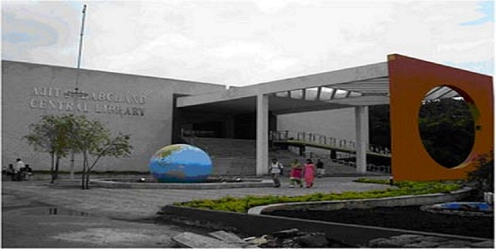

A New state of art Library worth 4,680 sq.mt. Constructed is a generous donation received from “Walchand Hirachand Memorial Trust” Mumbai and renamed as “Ajit Gulabchand Central Library”. The spacious library of the college holds the total collection of reading material 106715 including 55480 Books, 13064 Bound Volumes of Technical / Non-Technical Journals, Magazines, 38171 Book Bank Books accumulated over last six decades. It subscribes to 80 Technical, 8 Science and 7 General Journal / Magazines. This library is member of INDEST under which we receive 20212+ Online journals
Library is having Membership of DELNET, New Delhi for Inter Library Loan, Reference facility and document delivery services. Library is also participate N-LIST Inflibnet program through membership for e-journal and e-books. Digital Library : A separate section is dedicated to digital library in AGC library where 60 terminals where provided. Library has purchased and developed with association of CCF, E-learning resources worth Rs.30 lacks and loaded at Central Server at CCF, This facility can be available from anywhere in the entire campus by students and staff as well. CD server is available for research student.
